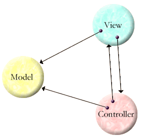
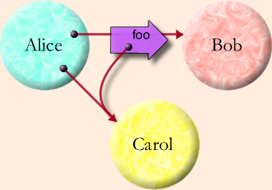
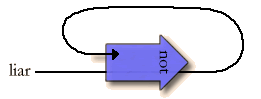

| |
Epimenides' Paradox |
||||||
Epimenides the Cretan, so the story goes, once said "All Cretans are liars." The logical issues raised were later distilled into pure form as the Liar Paradox, represented by the sentence "This sentence is false." Is the sentence true? If it is, then we have to believe what it claims, so it would be false. But if it's not true, then its claim that it itself is false isn't true, so the sentence would be true. As long as we insist that all sentences are either true or false, we can get tied up in such knots.
What does this have to do with E? At the end of Defining Variables we saw how to initialize circular structures by using variables on the right side of a define expression that are to be defined on the left:
def model := modelMaker(...) def [view, controller] := [ viewMaker(model, controller), controllerMaker(model, view) ]
in order to create:
Since we can define data in terms of itself, can we do so paradoxically? Let's try to define a variable, liar, whose value is the truth of the above paradoxical sentence:
? pragma.syntax("0.8") ? def liar := !liar # problem: Failed: not synchronously callable
Since the sentence is true if and only if it's false, we just define liar to be the opposite of itself. But what problem are we running into? Before we answer that, let's try this again using the explicit message passing syntax instead of the operator shorthand:
? def liar := liar.not() # problem: Failed: not synchronously callable
As is familiar, in E the value of a variable or an expression is an object reference, sometimes called a pointer to an object. This is often diagrammed as an arrow whose tail is the reference as a value, and whose head is attached to an object. Messages passed onto the reference ride from tail to head until they meet the object that should process the message. In the familar Granovetter Diagram

we say that Alice sends to Bob a foo message containing a copy of Alice's reference to Carol:
Somewhere inside Alice:
bob.foo(carol)
The two dots on the arrow tails within Alice represent Alice's instance variables "bob" and "carol" as used in the corresponding snippet of code. Though the diagram is neutral about what kind of message passing Alice is doing, the above code snippet shows a synchronous call, meaning that Bob will receive the message, deal with it, and pass control back to Alice before the above code in Alice continues. By using a synchronous call, Alice is asking Bob to do it now. She can only do this if her reference to Bob is a near reference. A reference is near if
- both the arrow head and the arrow tail are in the same Vat, and
- if the arrow head is already attached to an object.
Once a reference is near it will be forever near, and it will always be attached to the same object. A near reference will never fail to deliver a message sent on it to this object. Conventional single-address-space object-oriented programming (sasoop) has only the equivalent of near references.
The other possible states for a reference are eventual and broken. A reference that crosses between machines is eventual, as is a reference whose arrow head isn't yet attached to an object. When you use a variable on the right side of a definition that will be defined on the left side, during the execution of this right side, the value of the variable is an eventual reference designating the object the variable will be initialized to. It is the tail of an arrow whose head will be hooked up, but it doesn't get hooked up until after the right side finishes executing. We also refer to this as a promise for the value of the variable.
Since there's not yet an object on the other side of the arrow, a do it now message pass results in the above error. However, we can use E's do it eventually message pass, the asynchronous send operator, "<-":
? def liar := liar <- not() # value: <Promise>
We are asking whatever object comes to be pointed at by the arrow tail held at liar to compute the not() of itself. We then "resolve" the value of liar by initializing it to the eventual result of this not() message.

The not() message is stalled until there is an object for it to be delivered to. The object it's waiting for is the result of the not() message itself. Therefore, the variable is stuck in an unresolved state, never being able to decide if it's true or false, and therefore never having to deal with the paradox. Forever more, with this value you'll get:
? liar # value: <Promise>
"Doctor, it hurts when I take this inference step." "Well then, don't take that inference step." Such unresolvable circular definitions are the closest E comes to conventional deadlock. We call this data-lock.
Unless stated otherwise, all text on this page which is either unattributed or by Mark S. Miller is hereby placed in the public domain.
| |
|
report bug (including invalid html)
|
||||||||